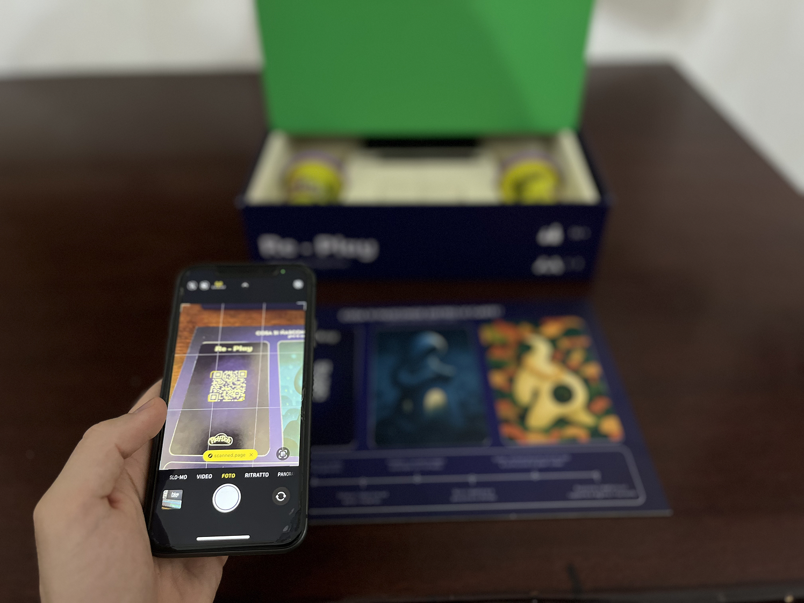
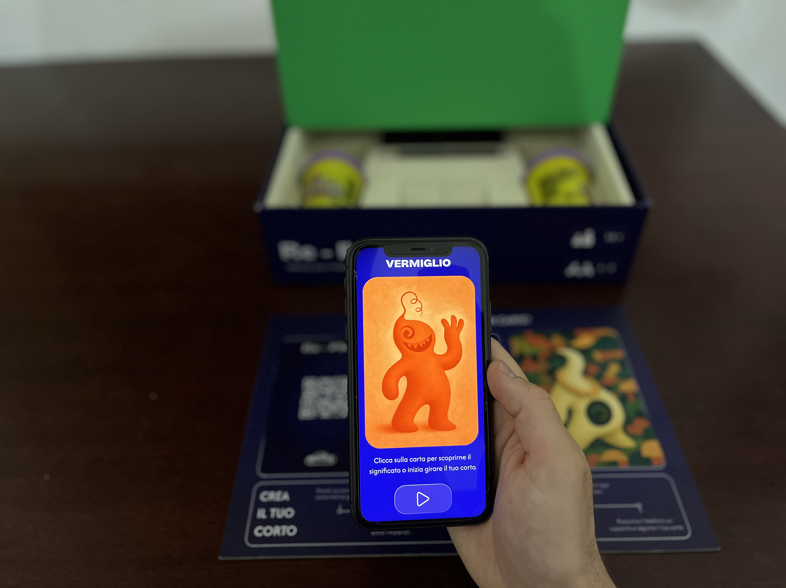
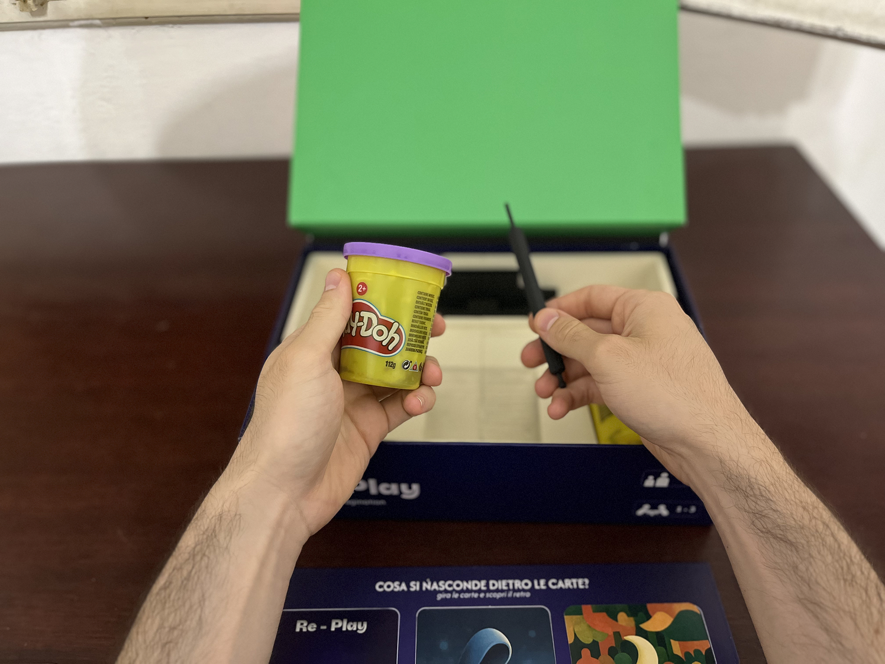
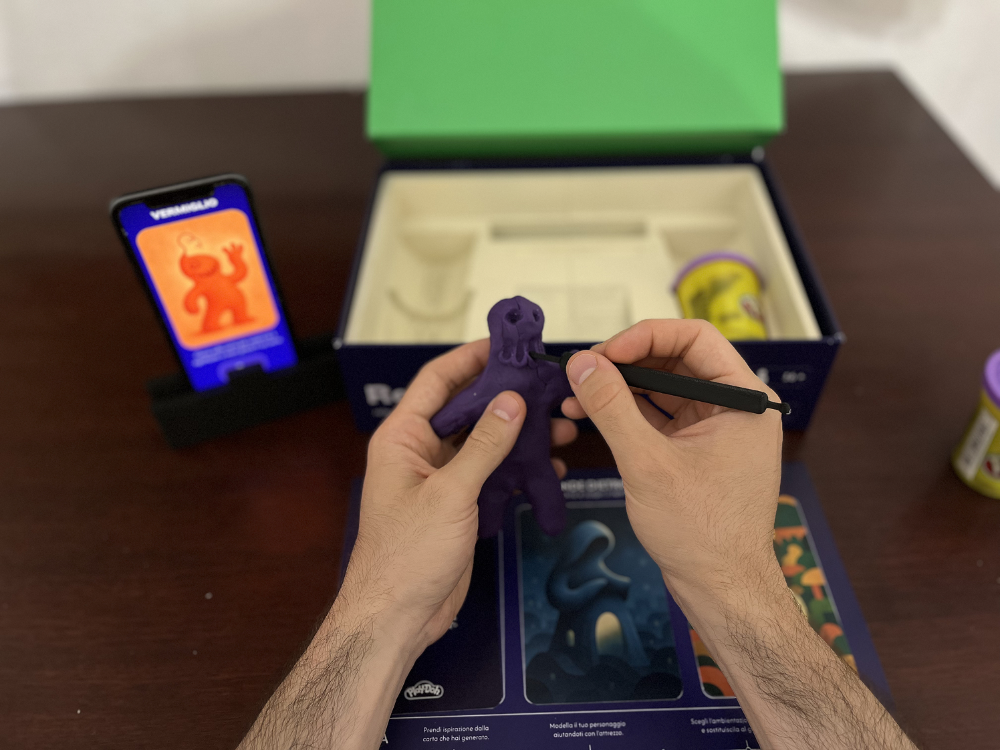
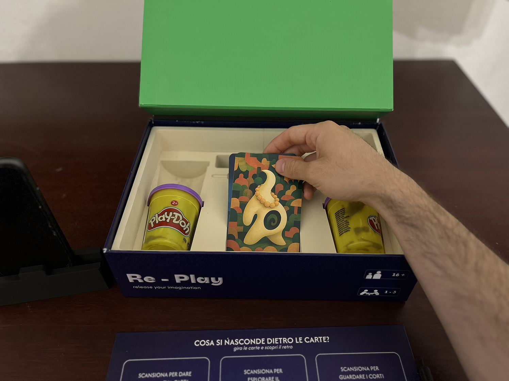
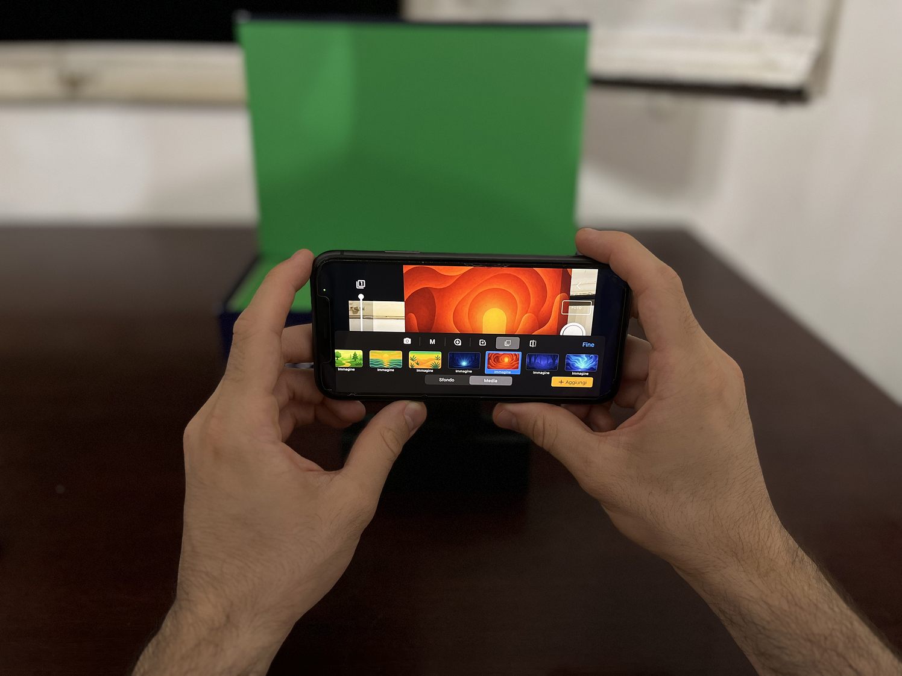
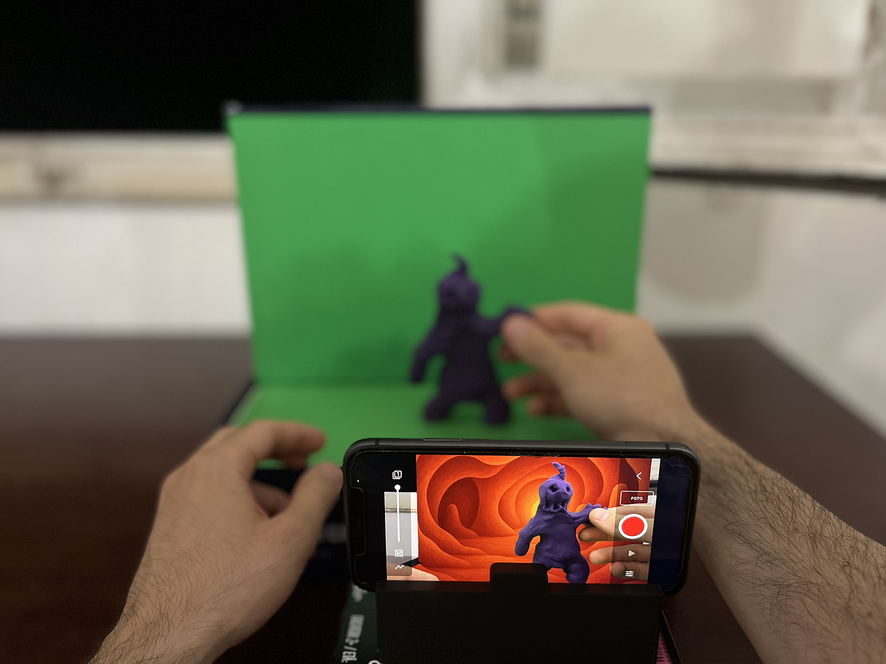

RE-PLAY
"RE-PLAY" es un juego de mesa diseñado para aprender la animación Stop-Motion y redescubrir la imaginación gracias al uso de la IA, donde el packaging se convierte en parte de la experiencia de juego.
.jpg)
Es un kit de juego Play-Doh cuyo packaging se transforma en un set "green screen" para ambientar y dar vida a cortos en stop motion, con el objetivo de ampliar el target y redescubrir la propia imaginación.
.jpg)

La experiencia está guiada por una aplicación dedicada que, además de proporcionar los elementos básicos para la grabación del corto, integra Inteligencia Artificial para generar infinitas cartas inspiración personalizadas para cada usuario.
PACKAGING

GRÁFICA

CARTAS INSPIRACIÓN
Tras investigar sobre los arquetipos de Jung y los fundamentos del character design, se han entrenado herramientas de Inteligencia Artificial para producir cartas de inspiración.
En este proyecto, la aplicación utiliza la IA para generar cartas que sirven de inspiración para la creación de los personajes.
Cada carta es única, creada a partir de preguntas planteadas al jugador y personalizada en función de sus respuestas.

EXPERIENCIA

Al abrirlo por primera vez, se utilizan tres cartas físicas escaneables y el tablero como instrucciones para empezar a crear el cortometraje.
Al escanear la primera carta, se accede a la generación de la primera carta inspiradora para la creación del personaje.
Después de responder a las 3 preguntas planteadas por la aplicación, se genera la carta inspiradora.
Después de sacar el tablero de la caja, se extraen la plastilina Play-Doh y la herramienta para modelar.
Se modela el personaje inspirado en la carta utilizando la herramienta.
Se guardan las cartas físicas en la caja.

Se coloca el tablero por el lado verde y se dispone el fondo para crear la pantalla verde.
Desde la aplicación se selecciona el fondo para sustituir la pantalla verde.
Se encuadra el personaje creado y se procede a grabar los fotogramas del corto en stop-motion.
.jpg)
_2.jpg)
Team:
Matteo Mengoli,
Dario Infantino,
Davide Soldi,
Giacomo Tamba Cuzzeri,
Piera Marinelli